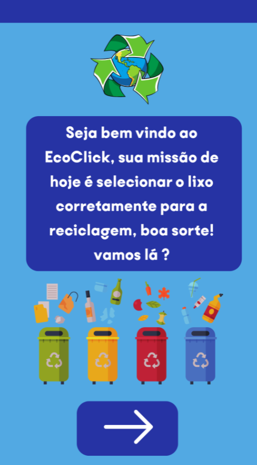
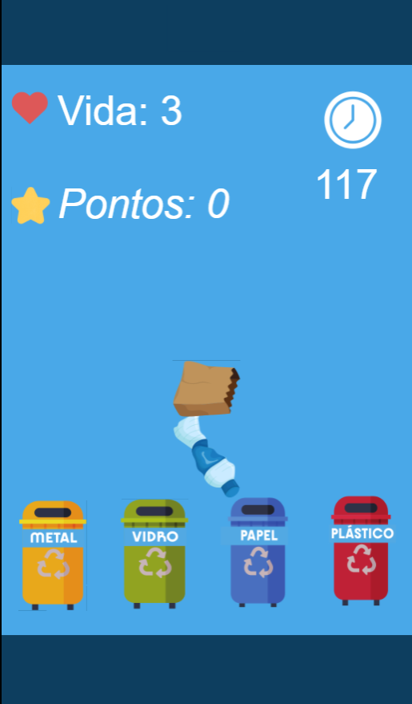
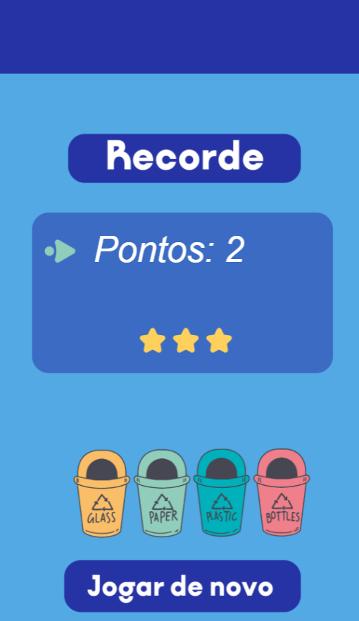

⬅ Voltar
🎮 EcoClick
O EcoClick é um minijogo educativo com temática ambiental, desenvolvido para a empresa GSA, pensado para ser simples, acessível e ao mesmo tempo consciente.
Trata-se de uma versão beta já funcional, criada tanto para dispositivos mobile quanto desktop, com foco em educação ambiental por meio da interação direta do jogador.
📱 Clique aqui para jogar

